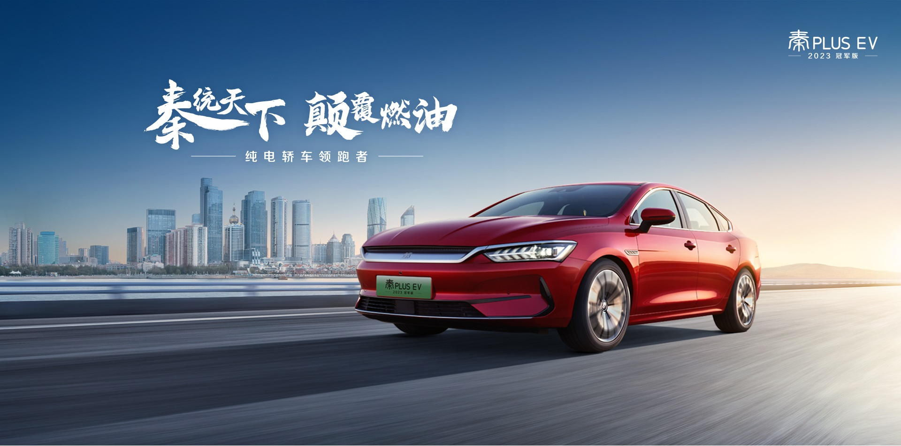

Sistema de Aprendizaje y Práctica del Sistema de Accionamiento Eléctrico
Entorno interactivo para el estudio y práctica del conexionado de componentes de alta tensión, sistemas auxiliares, arneses de control y principios de funcionamiento en vehículos eléctricos puros e híbridos.
 100% Eléctrico (BEV)
100% Eléctrico (BEV)
Vehículo Eléctrico Puro
Simulador de conexiones prácticas de componentes de tracción de alta tensión (batería, inversor, motor trifásico, contactores, convertidor DC-DC) y diagrama de principios de funcionamiento.

Híbridos (HEV)Vehículo Eléctrico Híbrido
Estudio interactivo de arquitecturas de propulsión híbrida: configuración en Serie, configuración en Paralelo y configuración Combinada (Serie-Paralelo con divisor planetario).
Anotaciones de Aprendizaje
Guía técnica completa del simulador: arquitecturas BEV, separación HV/LV, inversor, baterías, contactores y sistemas híbridos serie, paralelo y combinado.
Sistema de Tracción de Vehículo Eléctrico Puro
Selecciona una modalidad de aprendizaje: simulación de cableado práctico entre componentes reales o el análisis del principio de funcionamiento lógico y flujo de energía.
 Simulación Práctica
Simulación Práctica
Simulador de Cableado Físico
Conecta los terminales del convertidor DC-DC, relé, contactor DC, fusibles de alta tensión, controlador de motor, batería de tracción y motor eléctrico trifásico.
 Principio de Operación
Principio de Operación
Diagrama de Flujo y Principios
Establece las relaciones de control (VCU, BMS), flujo de potencia eléctrica bidireccional y enlaces mecánicos hacia la transmisión y las ruedas motrices.
Simulador de Cableado
Anotaciones de Aprendizaje y Mantenimiento
Arquitectura eléctrica y lógica de funcionamiento BEV & HEV del simulador autónomo.